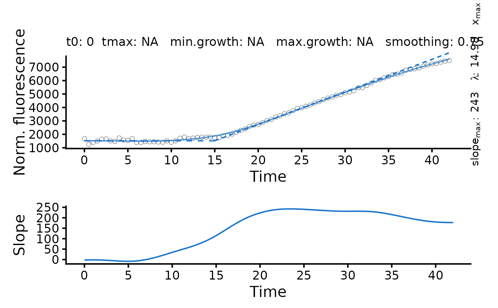

flFitSpline performs a smooth spline fit on the dataset and determines
the greatest slope as the global maximum in the first derivative of the spline.
Usage
flFitSpline(
time = NULL,
growth = NULL,
fl_data,
ID = "undefined",
control = fl.control(biphasic = FALSE, x_type = c("growth", "time"), log.x.spline =
FALSE, log.y.spline = FALSE, smooth.fl = 0.75, t0 = 0, min.growth = NA)
)Arguments
- time
Vector of the independent variable: time (if
x_type = 'time'infl.controlobject.- growth
Vector of the independent variable: growth (if
x_type = 'growth'infl.controlobject.- fl_data
Vector of dependent variable: fluorescence.
- ID
(Character) The name of the analyzed sample.
- control
A
fl.controlobject created withfl.control, defining relevant fitting options.- biphasic
(Logical) Shall
flFitLinearandflFitSplinetry to extract fluorescence parameters for two different phases (as observed with, e.g., regulator-promoter systems with varying response in different growth stages) (TRUE) or not (FALSE)?- x_type
(Character) Which data type shall be used as independent variable? Options are
'growth'and'time'.- log.x.spline
(Logical) Indicates whether ln(x+1) should be applied to the independent variable for spline fits. Default:
FALSE.- log.y.spline
(Logical) Indicates whether ln(y/y0) should be applied to the fluorescence data for spline fits. Default:
FALSE- smooth.fl
(Numeric) Parameter describing the smoothness of the spline fit; usually (not necessary) within (0;1].
smooth.gc=NULLcauses the program to query an optimal value via cross validation techniques. Especially for datasets with few data points the optionNULLmight cause a too small smoothing parameter. This can result a too tight fit that is susceptible to measurement errors (thus overestimating slopes) or produce an error insmooth.splineor lead to overfitting. The usage of a fixed value is recommended for reproducible results across samples. Seesmooth.splinefor further details. Default:0.55- t0
(Numeric) Minimum time value considered for linear and spline fits.
- min.growth
(Numeric) Indicate whether only values above a certain threshold should be considered for linear regressions or spline fits.
Value
A flFitSpline object. The lag time is estimated as the intersection between the
tangent at the maximum slope and the horizontal line with \(y = y_0\), where
y0 is the first value of the dependent variable. Use plot.flFitSpline to
visualize the spline fit and derivative over time.
- x.in
Raw x values provided to the function as
timeorgrowth.- fl.in
Raw fluorescence data provided to the function as
fl_data.- raw.x
Filtered x values used for the spline fit.
- raw.fl
Filtered fluorescence values used for the spline fit.
- ID
(Character) Identifies the tested sample.
- fit.x
Fitted x values.
- fit.fl
Fitted fluorescence values.
- parameters
List of determined parameters.
A: Maximum fluorescence.dY: Difference in maximum fluorescence and minimum fluorescence.max_slope: Maximum slope of fluorescence-vs.-x data (i.e., maximum in first derivative of the spline).x.max: Time at the maximum slope.lambda: Lag time.b.tangent: Intersection of the tangent at the maximum slope with the abscissa.max_slope2: For biphasic course of fluorescence: Maximum slope of fluorescence-vs.-x data of the second phase.lambda2: For biphasic course of fluorescence: Lag time determined for the second phase.x.max2: For biphasic course of fluorescence: Time at the maximum slope of the second phase.b.tangent2: For biphasic course of fluorescence: Intersection of the tangent at the maximum slope of the second phase with the abscissa.integral: Area under the curve of the spline fit.
- spline
smooth.splineobject generated by thesmooth.splinefunction.- spline.deriv1
list of time ('x') and growth ('y') values describing the first derivative of the spline fit.
- reliable
(Logical) Indicates whether the performed fit is reliable (to be set manually).
- fitFlag
(Logical) Indicates whether a spline fit was successfully performed on the data.
- fitFlag2
(Logical) Indicates whether a second phase was identified.
- control
Object of class
fl.controlcontaining list of options passed to the function ascontrol.
Details
If biphasic = TRUE, the following steps are performed to define a
second phase:
Determine local minima within the first derivative of the smooth spline fit.
Remove the 'peak' containing the highest value of the first derivative (i.e., \(mu_{max}\)) that is flanked by two local minima.
Repeat the smooth spline fit and identification of maximum slope for later time values than the local minimum after \(mu_{max}\).
Repeat the smooth spline fit and identification of maximum slope for earlier time values than the local minimum before \(mu_{max}\).
Choose the greater of the two independently determined slopes as \(mu_{max}2\).
See also
Other fluorescence fitting functions:
flBootSpline(),
flFit()
Examples
# load example dataset
input <- read_data(data.growth = system.file("lac_promoters_growth.txt", package = "QurvE"),
data.fl = system.file("lac_promoters_fluorescence.txt", package = "QurvE"),
csvsep = "\t",
csvsep.fl = "\t")
#> Sample data are stored in columns. If they are stored in row format, please run read_data() with data.format = 'row'.
# Extract time and normalized fluorescence data for single sample
time <- input$time[4,]
data <- input$norm.fluorescence[4,-(1:3)] # Remove identifier columns
# Perform linear fit
TestFit <- flFitSpline(time = time,
fl_data = data,
ID = 'TestFit',
control = fl.control(fit.opt = 's', x_type = 'time'))
plot(TestFit)
